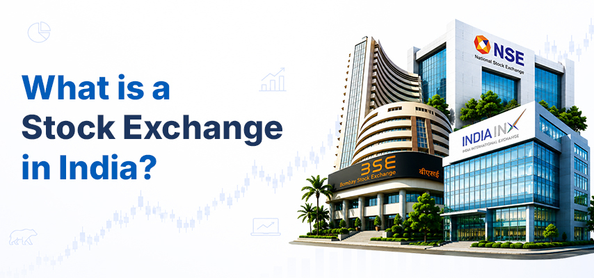

What is a Stock Exchange in India? Meaning, Types, and Functions

A stock exchange is an organised marketplace where shares, bonds and other securities are bought and sold between buyers and sellers, all under a set of rules that keep things fair and transparent. A stock exchange acts as an organised marketplace that facilitates transactions between buyers and sellers, ensuring transactions are executed efficiently, transparently and in accordance with regulatory requirements.
In addition to trading stocks and securities, stock exchanges play a critical role in ensuring that companies have an avenue through which they can generate funds while at the same time providing investors with a platform through which they can trade in securities. After understanding the concept of the stock exchange, understanding the broader stock market becomes much easier, including choosing the best stockbroker in India.
Types of Stock Exchanges in India
When it comes to stock exchanges in India, there is more than one platform where securities can be traded. Each exchange has its own role and covers particular segments of the financial market.
1. National Stock Exchange (NSE)
The National Stock Exchange, better known as NSE, is one of the main stock exchanges in India. Established in 1992, it provides a platform for trading in equities, derivatives, debt securities and other financial products.
You may also have heard of the Nifty 50 while following the market. It is NSE's key index and tracks the performance of 50 major companies listed on the exchange.
2. Bombay Stock Exchange (BSE)
The Bombay Stock Exchange, or BSE, is one of the oldest stock exchanges in India. Established in 1875, investors can use the exchange to trade securities such as shares, derivatives and debt instruments.
The Sensex is BSE's well-known benchmark index. It tracks 30 major companies and is often used to get a quick sense of how the market is performing.
3. India International Exchange (India INX)
India International Exchange, commonly known as India INX, is located at GIFT City in Gujarat and operates within the International Financial Services Centre (IFSC). It commenced operations in 2017 and, unlike NSE and BSE, its focus is closely linked to international financial market activities.
The exchange offers products across areas such as equity derivatives, currency derivatives, commodity derivatives and debt securities. It is also part of the financial ecosystem being developed at GIFT City.
Functions of a Stock Exchange
A stock exchange is not simply a place where someone presses a buy or sell button. There are several things happening behind the scenes that help the market function.
Here are some of the main functions of a stock exchange.
1. Facilitates Buying and Selling
The most obvious role of a stock exchange is to facilitate the buying and selling of listed securities.
Investors place buy and sell orders through SEBI-registered stockbrokers, and the exchange provides the infrastructure through which these orders can be matched and transactions can take place.
Without an organised platform, bringing together a large number of buyers and sellers would be far more difficult.
2. Enables Price Discovery
Why does the price of a share keep moving during market hours? A major reason is the changing balance between demand and supply.
For example, if more people are willing to buy a particular share, buying demand may push its price higher. If more investors are looking to sell, the price may move down. As buyers and sellers interact continuously, the market arrives at prices at which transactions can take place.
This process is known as price discovery.
3. Provides Liquidity
Imagine owning shares but finding it difficult to find someone willing to buy them when you want to sell. That would make investing much less convenient.
Stock exchanges help address this by bringing together a large number of market participants. When there is sufficient trading activity in a security, investors can generally buy or sell it more easily.
This ease of buying or selling securities in the market is known as liquidity.
4. Helps Companies Raise Capital
Stock exchanges are useful for companies too.
When a company issues shares and gets them listed, it can reach a wider group of investors and raise capital. Companies may use the funds raised for business expansion, new projects, acquisitions or other requirements.
This is one reason stock exchanges are closely connected with the growth and development of businesses.
5. Promotes Transparency
Investing in a company becomes difficult when investors have very little information about it.
Listed companies have to follow applicable disclosure and reporting requirements. They are expected to provide information about areas such as financial results, corporate actions and other developments that may be relevant to investors.
Having this information available gives investors a better basis for evaluating a company before making an investment decision.
6. Supports a Regulated Market
In India, the securities market is regulated by the Securities and Exchange Board of India (SEBI), which oversees market participants, protects investor interests, and promotes fair trading practices.
They handle the rulebook to keep trading fair and ensure investors benefit from regulatory oversight designed to protect their interests.
What is Equity Trading in India?
Equity trading means buying and selling shares of companies listed on recognised stock exchanges.
When you buy a share, you become a shareholder in that company. Investors may adopt different approaches to equity trading. An investor may buy shares with the intention of holding them for years, while a trader may enter and exit positions more frequently based on market movements or a particular strategy.
Before getting involved, it is important to understand the underlying business before investing rather than focusing solely on short-term price movements. Factors such as the company's business, financial performance, valuation and market conditions can all matter.
How to Open a Demat Account?
Opening a demat account is much easier than it used to be. You generally need to provide your basic details, bank information and KYC documents, followed by the required verification.
If you wish to start investing, you can open a demat and trading account with Integrated, subject to the successful completion of the applicable account opening and KYC requirements. The account-opening process is digital, allowing you to submit your details and documents online and complete the required verification from the comfort of your home.
Why is a Stock Exchange Important?
It is difficult to imagine the modern financial market without stock exchanges. They provide an organised system through which buyers and sellers can transact instead of having to find counterparties on their own.
They also help determine market prices through demand and supply, provide liquidity and create a framework for trading listed securities.
Companies benefit from them as well. By issuing and listing securities, businesses can get access to a larger pool of investors and raise funds for different purposes.
For an individual who is new to investing, understanding the role of a stock exchange can make many other concepts easier to follow. Terms such as shares, indices, equity trading, listed companies and demat accounts start making more sense once you know where they fit into the larger picture.
Conclusion
A stock exchange is an important part of India's financial market. It provides an organised platform for trading securities and plays a role in price discovery, liquidity, capital raising and transparent market activity.
NSE, BSE and India INX are three exchanges worth knowing about when you are learning how the Indian market works. While their history, structure and areas of operation are different, each forms part of the country's financial market infrastructure.
If you are new to investing, understanding the stock exchange is a good place to begin. From there, you can learn about shares, trading, demat accounts and other investment products at your own pace, while keeping your financial goals and investment needs in mind.
Disclaimer - This blog is intended solely for educational and informational purposes and should not be construed as investment, financial or legal advice. Investments in securities are subject to market risks. Please read all related documents carefully before investing.
FAQs
1. What is a Stock Exchange?
A stock exchange is an organised marketplace where shares, bonds and other securities are bought and sold under established rules and regulations.
2. What are the main stock exchanges in India?
The main stock exchanges in India include the National Stock Exchange (NSE), Bombay Stock Exchange (BSE) and India International Exchange (India INX).
3. What are the main functions of a stock exchange?
A stock exchange facilitates buying and selling, helps with price discovery, provides liquidity, supports companies in raising capital and promotes transparency in the securities market.
4. What is equity trading in India?
Equity trading refers to buying and selling shares of companies listed on recognised stock exchanges. Investors can trade shares based on their investment goals and strategies.
5. Do I need a Demat account to trade in the stock market?
Yes. A Demat account is generally required to hold shares and other securities in electronic form. To buy and sell securities, investors typically also need a trading account.